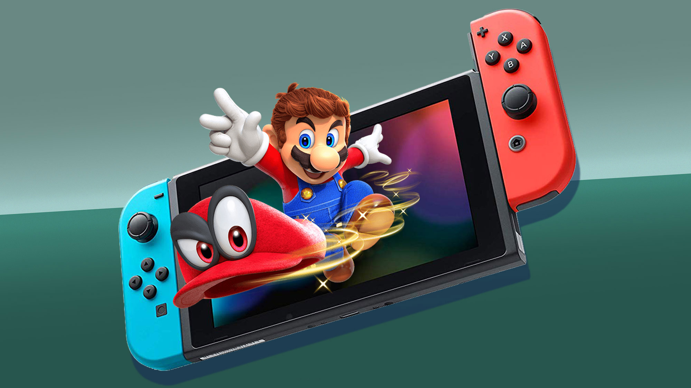

It's a me, Mario!
Outwit family and friends as you race across the board to collect the most stars in the original four-player Mario Party series board game mode. Face off against opponents in the 2 vs. 2 mode with grid-based maps. And for the first time in the series’ history, you can put your skills to the test in an online minigame mode. There’s fun for everyone in the Super Mario Party game, available exclusively for the Nintendo Switch system!


- 